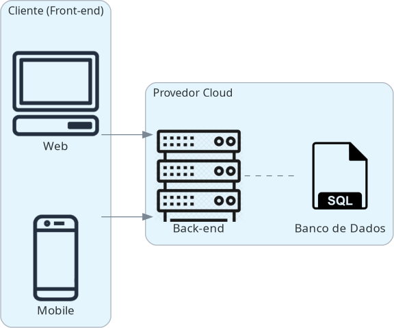
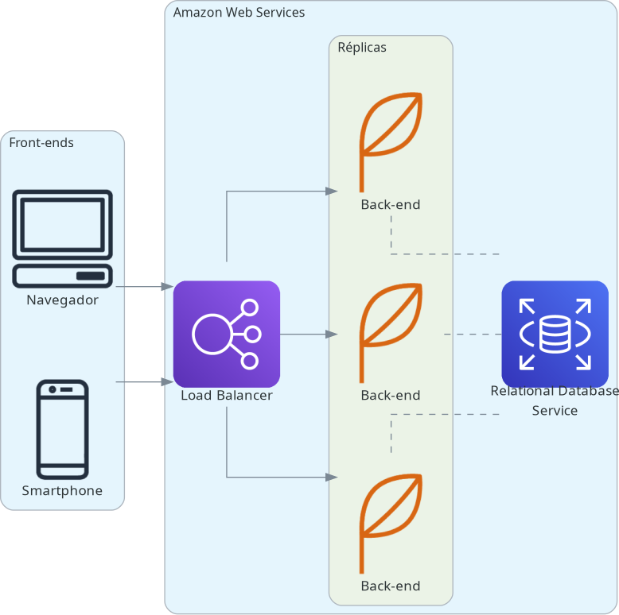
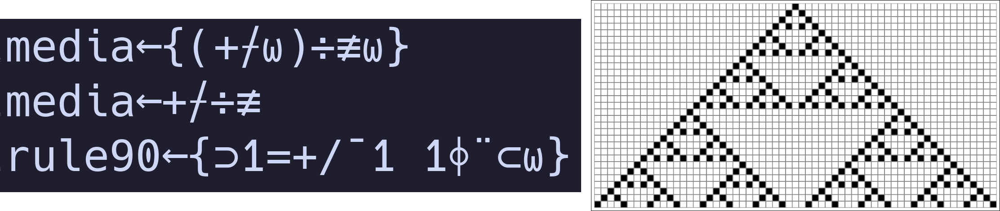
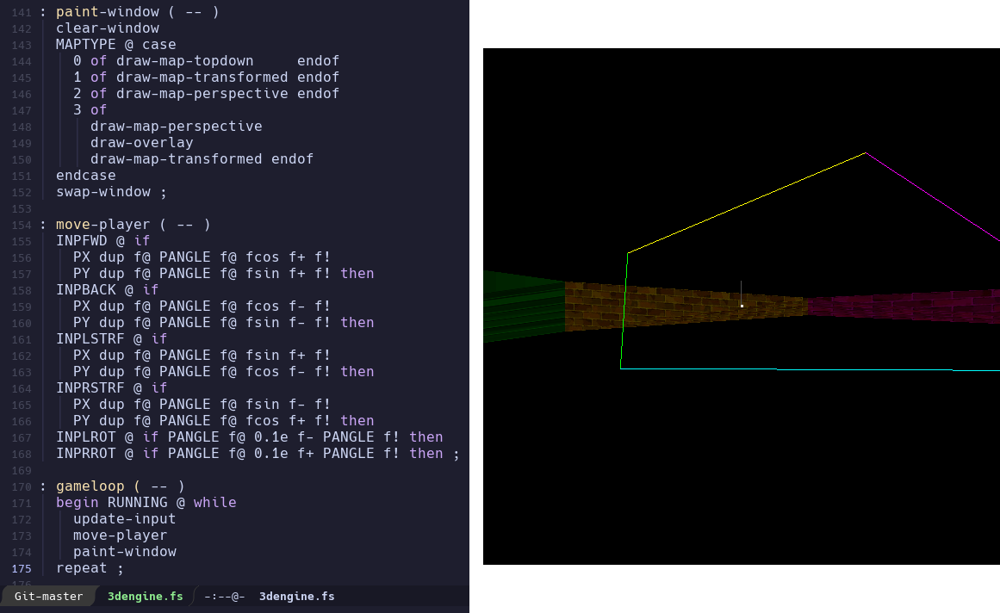
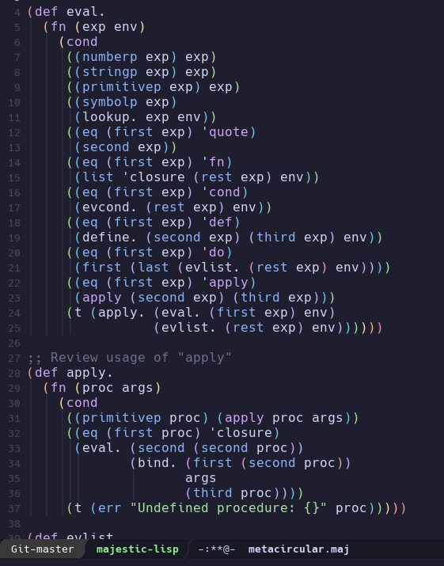

Programação Pragmática
Versatilidade e pensamento lateral no desenvolvimento de software
Lucas Samuel Vieira
07 de julho de 2023
Quem sou eu?
Tech Lead na ATS Informática
Interesses: Inteligência artificial, ciência cognitiva, filosofia da mente, teoria da computação, desenvolvimento de linguagens de programação, desenvolvimento de jogos, programação bare-metal
Co-fundador da Common Lisp Brasil
lisp.com.br
luksamuk https://luksamuk.codes/ luksamuk
Conteúdo
Esta apresentação é para quem:
- é iniciante, e está começando;
- quer ser um programador melhor;
- quer ser um programador profissional melhor.
Introdução

Dicas para iniciantes
Conselhos ouvidos por iniciantes:
"Aprenda X, Y e Z…"
Consequências da visão míope disso
- Viram especialistas em X, Y e Z
- Viram especialistas que SÓ SABEM X, Y e Z
- Viram especialistas que odeiam tudo que não seja X, Y e Z
Só que…
- Linguagens/frameworks são ferramentas no seu cinto de utilidades
- Conhecimento fora da especialidade = ideias além do óbvio
- Saber "mais coisas" vai te ajudar quando menos esperar
Por quê?
- Conhecimento não vive em caixinhas de disciplinas
- Mas passamos a vida toda acostumados com isso
O mesmo vale para a computação!
Pode dar um exemplo?
Exemplo: Dominar frontend/backend + entender deploy e pipelines
Tô falando grego? Calma que explico…
Dicotomia servidor/cliente clássica
Desenho arquitetural final (simplificado)
Conceitos que você precisa entender para tudo isso
- Linux; linha de comando (Bash, PowerShell…)
- Conteinerização, orquestração de contêineres
- Como funciona o cloud provider escolhido (AWS, Microsoft Azure, Google Cloud Platform…)
- Princípios e ideias de paradigmas de programação que você vê pouco na
faculdade
- Ex: Programação funcional (que não é igual à procedural!)
Consequências dessa abordagem
- Você vai ser mais assertivo quanto à execução do seu sistema em produção (v. DevOps)
- Você vai saber otimizar o backend/frontend para essa situação
- As tarefas de desenvolvimento podem ser otimizadas para este cenário
Estou perdido(a). É coisa DEMAIS!
- (Geralmente) você pode contar com uma equipe para dividir a carga ou te ensinar
- Nenhum conhecimento disso se adquire de uma vez só!
Dicas para ser um(a) programador(a) melhor
Pense criticamente sobre o que você está fazendo
- Impacto e entrega de valor
- Questione TUDO – especialmente as "melhores práticas"!
Programadores não são meros codificadores
- Soft skills, regras de negócio
- "Isso faz sentido?"
Código é para comunicar com outras pessoas
Código tem três leitores:
- Seu colega de trabalho
- Você, no futuro
- O compilador (o mais fácil de agradar, e o mais perigoso)
Não tolere janelas quebradas!
- Se tá ruim, "interdite" ou mapeie para consertar depois
- "Não é problema meu": a raiz de todo o mal
Dicas para ser um profissional melhor
Pensamento lateral
Pensamento com orientação ou ponto de vista diferente da norma
- "Pense fora da caixa" – mas algum dia você entrou dentro dela?
É difícil treinar isso, mas sair da mesmice ajuda. Eis três coisas que sempre faço…
Invista em sua carteira de conhecimentos
- Aprenda uma coisa NOVA
- Aprenda uma coisa DIFERENTE
- Aprenda uma coisa VELHA
Alguns exemplos de linguagens velhas que aprendi:
APL
Forth
Lisp
Faça o que todo mundo diz que é difícil
É pra poucos? Então é pra você!
- Faça coisas legais, isso é portfólio – e tem tutorial pra tudo na internet
- Faça sua própria linguagem de programação
- Faça um sistema operacional extremamente básico
- Coloque no GitHub, escreva a respeito em blog
E o mais importante…
DIVIRTA-SE!
Concluindo
- Evite ficar preso em uma coisa só.
- Programação é um trabalho artesanal, mas não menos profissional.
- Tenha bom senso e pense no próximo.
- Use o tempo livre para fazer projetos que você ache serem legais.
Obrigado!
luksamuk https://luksamuk.codes/ luksamuk